Easy – moderate
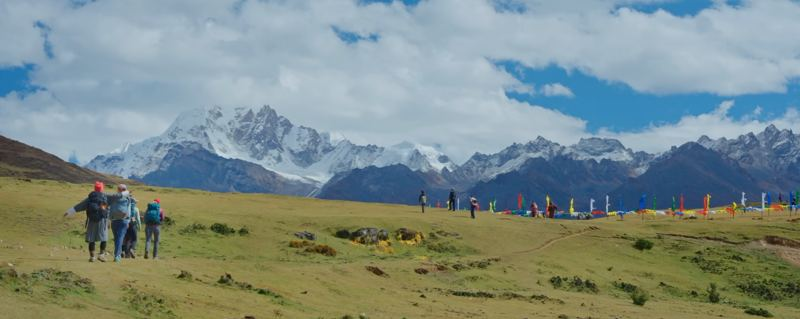
Druk Path
The classic first trek: Paro to Thimphu over the ridges between them, past Jele Dzong, rhododendron forest and the trout lakes of Jimilang Tsho, with long views of the high Himalaya on clear days.
High passes strung with prayer flags, glacial lakes, yak-herder villages and peaks no one is allowed to climb. Bhutan's treks are fully supported camping journeys: ponies carry the load, a trek chef cooks every meal, and a Bhutanese guide walks beside you all the way.
From a five-day ridge walk above Paro to the month-long Snowman, every trek is private, fully crewed and shaped around your fitness and dates. Walking days are shown; the full trip adds arrival, acclimatisation and sightseeing days.

The classic first trek: Paro to Thimphu over the ridges between them, past Jele Dzong, rhododendron forest and the trout lakes of Jimilang Tsho, with long views of the high Himalaya on clear days.
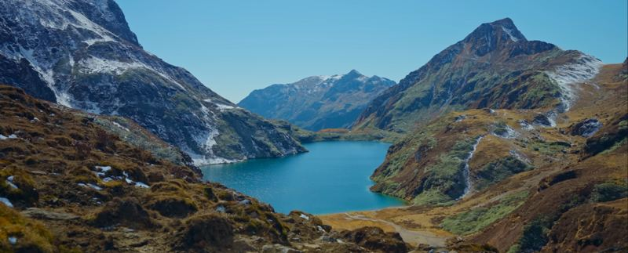
A short, high trek south of Thimphu through yak pastures to a plateau scattered with glacial lakes. Few trekkers, wide panoramas, and camps beside water that mirrors the sky.
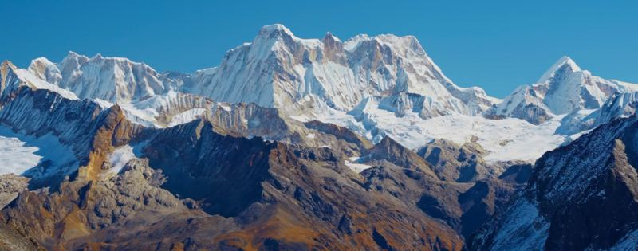
Up the Paro valley to base camp at Jangothang beneath Jomolhari (7,326 m), over Nyile La to Lingzhi Dzong, then across Yale La toward Thimphu. Bhutan's best-loved high trek.
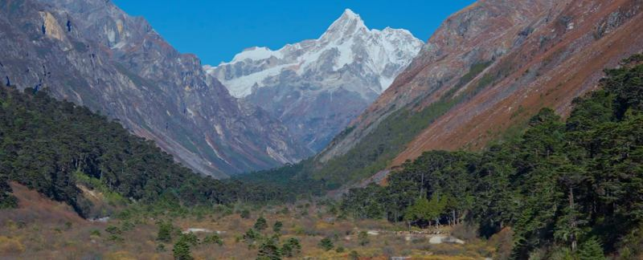
Jomolhari's quieter cousin: the same approach to Jangothang, then a loop through the hidden Soi Yaksa valley of nomad camps and waterfalls, returning to Paro.
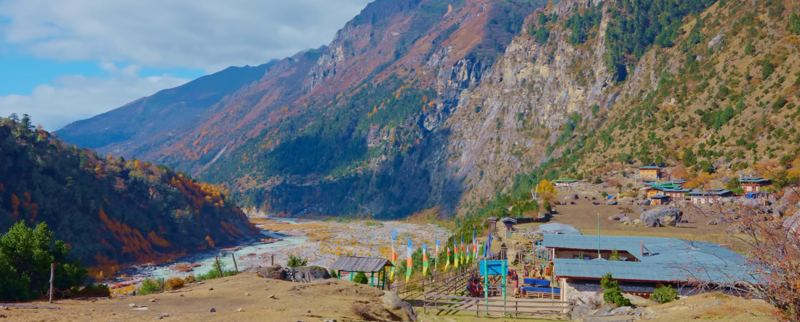
From Paro across the northern passes to Laya, home of the Layap people and their conical bamboo hats, then down through takin country to the Gasa hot springs and Punakha.
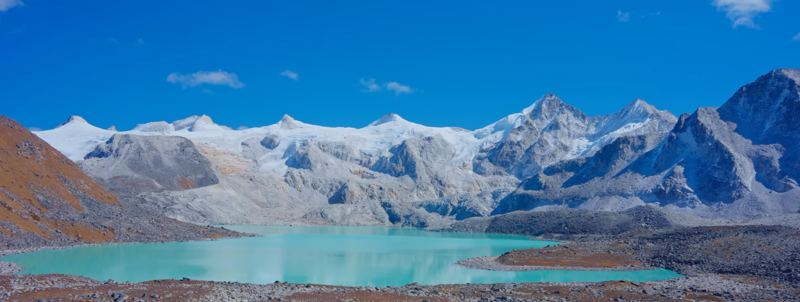
The great traverse of the Bhutan Himalaya: Jomolhari, Laya and the remote Lunana region, eleven high passes and close to 350 km on foot. One of the hardest treks on earth. See the route
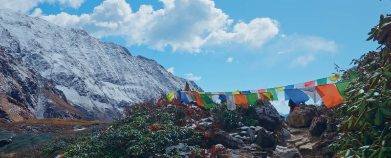
A short ridge trek from Bhutan's highest road pass between Paro and Haa: prayer-flag summits, the Kila Gompa nunnery on its cliff, and on clear mornings Jomolhari on the horizon.
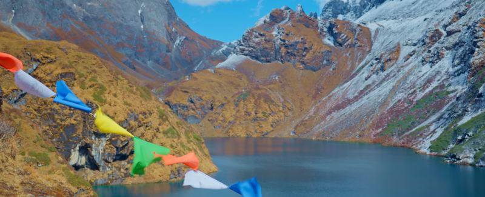
Into the high country of Haa, one of Bhutan's least-visited districts, to the sacred lake of Nub Tshonapata and the yak pastures around it.
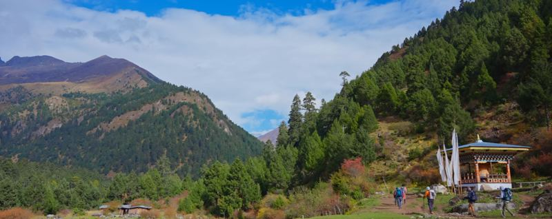
Far eastern Bhutan, to the twin villages of the semi-nomadic Brokpa people, who still wear yak-hair hats and red woollen tunics, inside the Sakteng Wildlife Sanctuary.
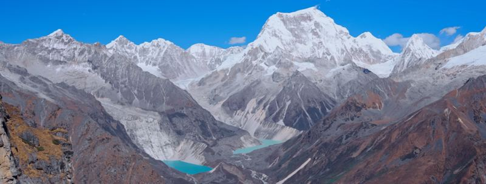
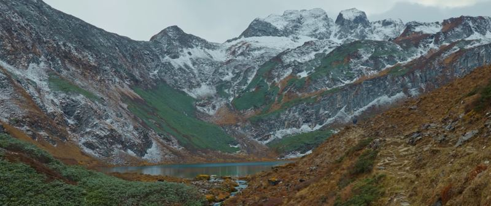
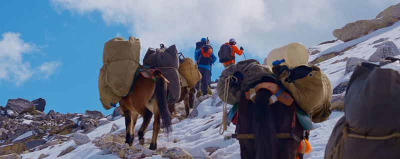
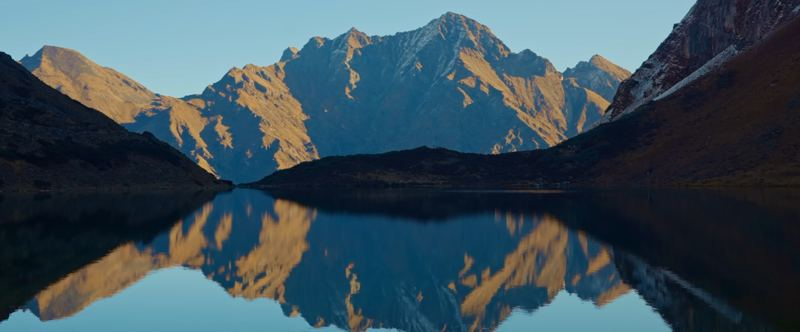
Twenty-four walking days across the northern wall of Bhutan, from the Paro valley to Lunana, a district so remote it is cut off by snow for half the year. More people summit Everest each season than complete the Snowman. It asks a great deal: weeks above 4,000 metres, long days, and weather that decides the route. In return it gives you a Bhutan very few outsiders ever see.
Arrive, rest, and climb to Taktsang Monastery as a first acclimatisation walk.
Through forest and yak meadows to base camp at about 4,040 m under Jomolhari, with a rest day to acclimatise.
Over Nyile La, Gogu La and Jari La, past Lingzhi Dzong and the blue-sheep slopes of Shomuthang, then down to Laya village for a rest day.
Across Tsomo La and Gangla Karchung La (about 5,100 m) beside glaciers and lakes, through Woche and Lhedi to Thanza, and a rest day among its farmers.
The hardest stretch: camps near 5,000 m at Tshochena and Jichu Dramo, the summit of the trek at Rinchen Zoe La, then the long descent past Tampe Tsho to the road at Nikka Chhu.
Hot showers, a dzong or two, and a farewell dinner before your flight.
Before you book: the Snowman runs only when the high passes are open, usually from late September. Snow can close Gangla Karchung La or Rinchen Zoe La at short notice; your guide will then take a safe exit route through Lunana or Gasa. We ask every Snowman trekker for previous high-altitude trekking experience.
There are no lodges on Bhutan's high trails, so every trek is a fully supported camping journey. A small crew travels with you and has camp standing before you arrive.
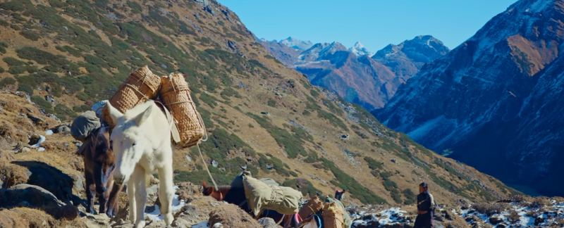
A licensed Bhutanese guide, a trek chef, camp assistants and local horsemen. A party of two travels with around five crew; larger groups have more.
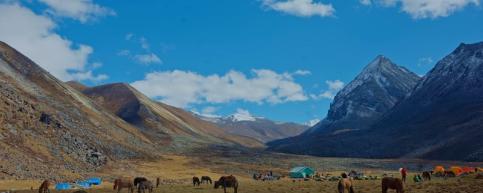
Horses, mules or, above the tree line, yaks carry the tents, kitchen and your duffel bag (about 15 kg each). You carry only a daypack with water, camera and layers.
Sleeping tents with mats, a dining tent with tables and chairs, a kitchen tent and a toilet tent, pitched at established campsites, usually between 3,500 and 5,000 m.
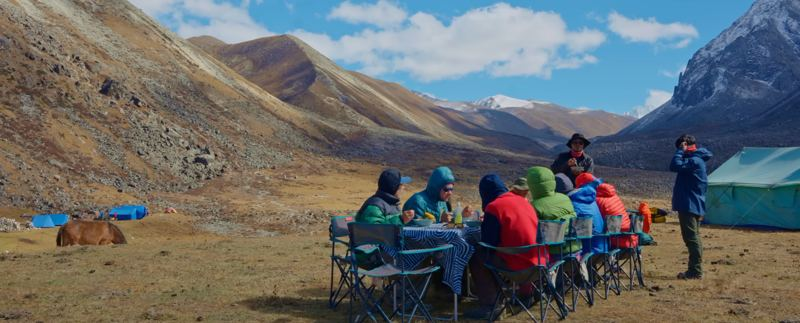
Hot breakfast, a warm packed lunch, tea and snacks when you reach camp, and a three-course dinner: soup, rice, vegetables, meat or eggs, and Bhutanese, Indian or continental dishes.
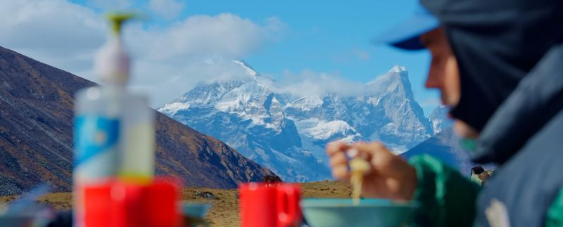
Tea at your tent at dawn, walking by eight, five to seven hours on the trail with a long lunch, and evenings in the dining tent. Some days are short; pass days are long.
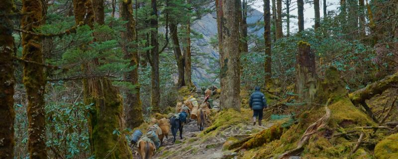
Water is boiled every day for your bottles. Expect forest paths, river stones, moraine, mud and stream crossings, and snow or ice on the high passes.
The monsoon and the winter snows shape Bhutan's trekking calendar. High routes open in spring and autumn; the short, lower treks can run for longer.
Rhododendrons in flower and warming days. Views are hazier than autumn and afternoon showers build toward late May.
Heavy rain, leeches, muddy trails and cloud on the peaks. Only short, lower walks make sense.
Clear, settled skies and the sharpest mountain views. The only window for the Snowman. Nights at high camps are cold.
Snow closes the high passes and trails ice over. Short, low-altitude walks around Punakha and Paro are still lovely.
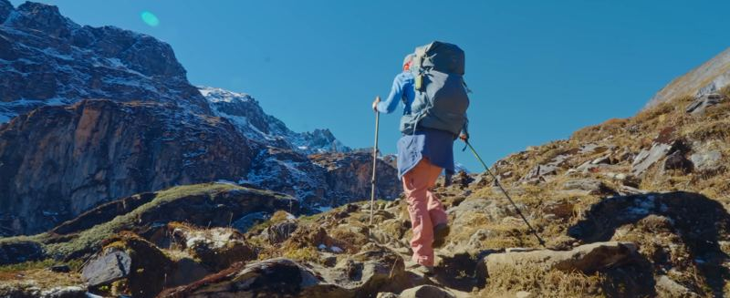
Most Bhutan treks spend days above 4,000 metres. Acute mountain sickness can affect anyone, however fit; what protects you is time. Every itinerary we build climbs gradually and includes rest days at altitude.
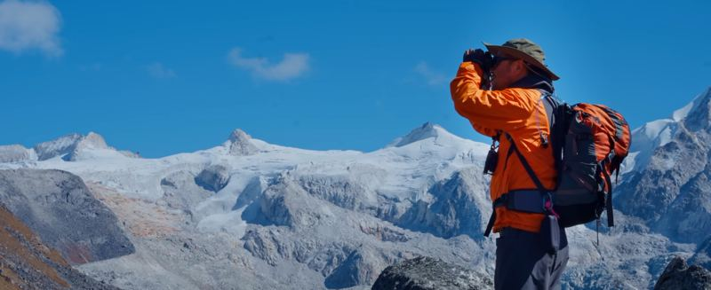
We provide tents, mats, dining and kitchen gear, and the ponies to carry it. Bring your personal kit in a soft duffel bag; city clothes stay safely in Thimphu or Paro.
Frames from the trail across Bhutan's northern Himalaya. Select a photo to see it larger.
Tell us how far you want to go and when. We'll match you with the right trek, handle your visa, permits and the Sustainable Development Fee, and send a day-by-day plan within 24 hours.